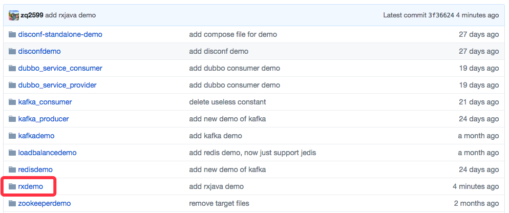
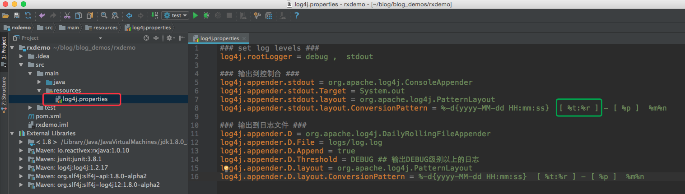
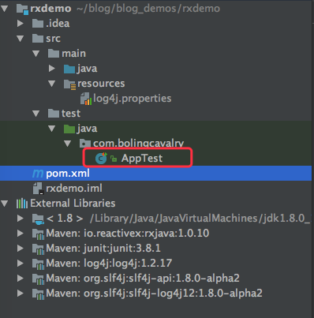
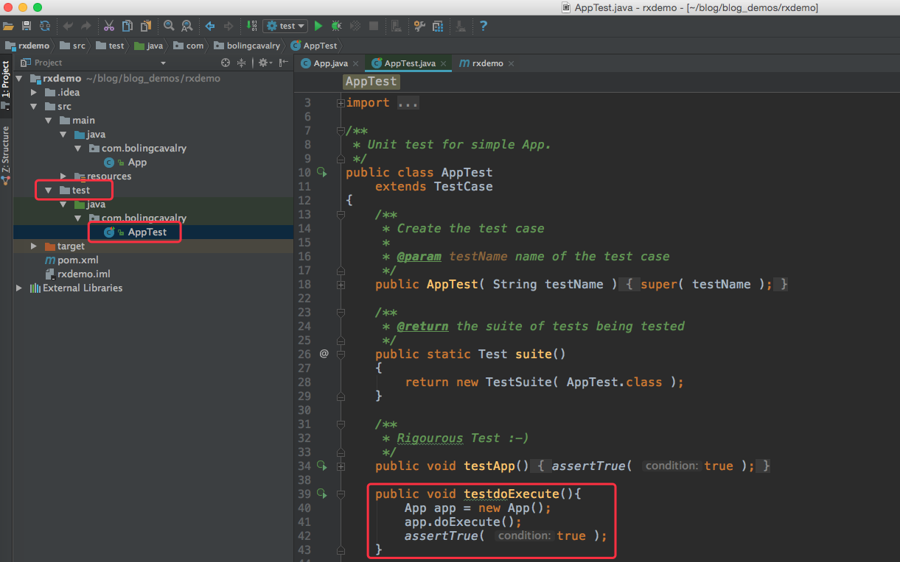

原文连接:https://www.cnblogs.com/bolingcavalry/p/11433257.html
RxJava是 ReactiveX在 Java上的开源的实现，简单概括，它就是一个实现异步操作的库，使用时最直观的感受就是在使用一个观察者模式的框架来完成我们的业务需求；
其实java已经有了现成的观察者模式实现：java.util.Observable和java.util.Observer，那么为何还要RxJava呢？
java.util.Observable是典型的观察者模式实现，而RxJava主要功能如下：
- 生产者加工数据，然后发布給观察者；
- 观察者处理数据；
- 从生产者生产数据到观察者处理数据，这之间传递的数据可以被处理；
- 线程切换，生产者发布数据和观察者处理数据可以在指定线程中处理；
RxJava还有个特点就是支持链式编码，再配合lambda，可以保持简洁和清晰的逻辑(注意是逻辑简洁，代码是否简洁只能取决于实际业务)；
看得出，除了实现观察者模式，RxJava还提供了更丰富的能力，纯文字太枯燥了，我们来编码实战吧！
源码下载
如果您不打算写代码，也可以从GitHub上下载本次实战的源码，地址和链接信息如下表所示：
| 名称 | 链接 | 备注 |
|---|---|---|
| 项目主页 | https://github.com/zq2599/blog_demos | 该项目在GitHub上的主页 |
| git仓库地址(https) | https://github.com/zq2599/blog_demos.git | 该项目源码的仓库地址，https协议 |
| git仓库地址(ssh) | git@github.com:zq2599/blog_demos.git | 该项目源码的仓库地址，ssh协议 |
这个git项目中有多个文件夹，本章的应用在rxdemo文件夹下，如下图红框所示：

源码仅用来参考，建议自己把代码写出来，才能印象深刻；
准备工作之一：日志
本次诗函通过打印日志来观察代码执行情况，会打印时间和执行线程，这里用的是slf4j＋log4j的方式；
工程创建完毕后，结构如下：

- log4j.propertieds文件的位置请注意，需要放在上图红框位置；
- 为了在日志中打印当前线程，log4j的配置如上图绿框所示， %t表示当前线程， %r表示程序已经执行的时间；
- 在pom文件中，对日志的依赖为：
<dependency>
<groupId>org.slf4j</groupId>
<artifactId>slf4j-log4j12</artifactId>
<version>1.8.0-alpha2</version>
</dependency>准备工作之二：单元测试
验证代码是通过单元测试实现的，pom.xml文件中，对单元测试的依赖为：
<dependency>
<groupId>junit</groupId>
<artifactId>junit</artifactId>
<version>3.8.1</version>
<scope>test</scope>
</dependency>单元测试代码在如下图红框位置：

准备工作之三：支持lambda
支持lambda表达式表现在maven支持和intellij idea工具支持两个方面，具体设置请参照《设置Intellij idea和maven，支持lambda表达式》
准备工作结束，可以正式开发了
RxJava的依赖库
依赖库选用1.0.10版本，如下：
<dependency>
<groupId>io.reactivex</groupId>
<artifactId>rxjava</artifactId>
<version>1.0.10</version>
</dependency>最简单的观察者模式实现
第一个例子，我们实践最简单的用法：
- 创建App.java类，声明日志服务：
public class App
{
private static final Logger logger = LoggerFactory.getLogger(App.class);- 开发doExecute方法实现基于Rxjava的观察者模式：
public void doExecute(){
logger.debug("start doExecute");
//声明一个观察者，用来响应被观察者发布的事件
Observer<String> observer = new Observer<String>() {
/**
* 被观察者发布结束事件的时候，该方法会被调用
*/
public void onCompleted() {
logger.debug("start onCompleted");
}
/**
* 被观察者发布事件期间，和观察者处理事件期间，发生异常的时候，该方法都会被调用
*/
public void onError(Throwable throwable) {
logger.debug("start onError : " + throwable);
}
/**
* 被观察者发布事件后，该方法会被调用
* @param s
*/
public void onNext(String s) {
logger.debug("start onNext [" + s + "]");
}
};
Observable<String> observable = Observable.create(new Observable.OnSubscribe<String>() {
public void call(Subscriber<? super String> subscriber) {
//向观察者发布事件
subscriber.onNext("Hello");
//再次向观察者发布事件
subscriber.onNext("world");
//通知观察者，订阅结束
subscriber.onCompleted();
}
});
logger.debug("try subscribe");
//执行订阅
observable.subscribe(observer);
logger.debug("finish doExecute");
}代码的逻辑很简单，定义观察者(observer)，被观察者(observable)，执行订阅；
- 本次测试用junit来执行，在test目录下创建一个AppTest类，具体的目录和内容如下图：

打开控制台，在pom.xml文件所在目录下执行mvn test，即可看到日志：
2017-06-10 10:02:02 [ main:0 ] - [ DEBUG ] start doExecute
2017-06-10 10:02:02 [ main:19 ] - [ DEBUG ] try subscribe
2017-06-10 10:02:02 [ main:22 ] - [ DEBUG ] start onNext [Hello]
2017-06-10 10:02:02 [ main:22 ] - [ DEBUG ] start onNext [world]
2017-06-10 10:02:02 [ main:22 ] - [ DEBUG ] start onCompleted
2017-06-10 10:02:02 [ main:23 ] - [ DEBUG ] finish doExecute执行的代码是observable.subscribe，此代码执行后，观察者的onNext和onCompleted被回调；
简化的观察者
在上面的doExecute方法中，我们创建的被观察者实现了onNext，onError，onCompleted这三个方法，有的场景下我们只关注onNext，对onError和onCompleted都不关心，此时我们可以使用Action1对象来替代Observer，代码如下：
public void doAction(){
logger.debug("start doAction");
Action1<String> onNextAction = new Action1<String>() {
public void call(String s) {
logger.debug("start Action1 onNextAction [" + s + "]");
}
};
Observable<String> observable = Observable.create(new Observable.OnSubscribe<String>() {
public void call(Subscriber<? super String> subscriber) {
subscriber.onNext("Hello");
subscriber.onNext("world");
subscriber.onCompleted();
}
});
logger.debug("try subscribe");
observable.subscribe(onNextAction);
logger.debug("finish doAction");
}可以看到，只要一个Action1对象即可；
另外，对于错误回调也可以用Action1来实现，事件完成的回调用Action0，Action0的特点是方法没有返回，对于的这些Action，observable.subscribe方法提供了各种重载，我们可以按照自己需要来决定使用哪种，传入哪些Action；
简化的被观察者
在上面的doExecute方法中，被观察者发布了两个事件：onNext("Hello")和onNext("world")，我们创建被观察者是通过Observable.create，然后在call方法中写入onNext("Hello")，onNext("world")最后在写上subscriber.onCompleted()，对于这种发布确定的对象事件的场景，rxjava已经做了简化，直接上代码：
public void doFromChain(){
logger.debug("start doFromChain");
//声明一个观察者，用来响应被观察者发布的事件
Action1<String> observer = new Action1<String>() {
/**
* 被观察者发布事件后，该方法会被调用
* @param s
*/
public void call(String s) {
logger.debug("start onNext [" + s + "]");
}
};
String[] array = {"Hello", "world"};
//from方法可以直接创建被观察者，并且发布array中的元素对应的事件
Observable.from(array).subscribe(observer);
logger.debug("finish doFromChain");
}如上代码，之前我们创建被观察者，并且在call方法中依次执行onNext的操作，这些事情都被Observable.from(array)简化了；
进一步简化的被观察者
Observable.from接受的是一个数组，而Observable.just可以直接接受多个元素，我们连创建数组的步骤都省略掉了，再把Action1简化为lambda，可以得到更加简化的代码：
public void doJustChain(){
logger.debug("start doJustChain");
Observable.just("Hello", "world")
.subscribe(s -> logger.debug("start onNext [" + s + "]"));
logger.debug("finish doJustChain");
}经历了以上的实战，我们对Rxjava的基本能力有了了解，下面了解一些更复杂的用法；
基本变换
试想，如果被观察者发布的事件是int型，但是观察者是处理String型事件的，那么此观察者如何才能处理被观察者发布的事件呢，除了修改观察者或者被观察者的代码，我们还可以使用Rxjava的变换方法－map：
public void doMap(){
logger.debug("start doMap");
Observable.just(1001, 1002)
.map(intValue -> "int[" + intValue + "]")
.subscribe(s -> logger.debug("Action1 call invoked [" + s + "]"));
logger.debug("finish doMap");
}代码中可以看到，map方法接受的是Func1接口的实现，由于此接口只声明了一个方法，所以这里被简化成了lambda表达式，lambda表达式的入参由just的入参类型推断而来，是int型，返回的是字符串，后面的代码就可以直接用String型的消费者来处理事件了；
更自由的变换
map方法提供了一对一的映射，但是实际场景中未必是一对一的，例如一个int数字要发起两个String事件，map就不合适了，RxJava还有个flatMap方法，可以提供这种能力，此处没用lambda来简化，可以看的更清楚：
public void doFlatMap(){
logger.debug("start doFlatMap");
Observable.just(101, 102, 103)
.flatMap(new Func1<Integer, Observable<String>>() {
public Observable<String> call(final Integer integer) {
return Observable.create(new Observable.OnSubscribe<String>() {
public void call(Subscriber<? super String> subscriber) {
subscriber.onNext("after flatMap (" + integer + ")");
subscriber.onNext("after flatMap (" + (integer+1000) + ")");
}
});
}
})
.subscribe(s -> logger.debug("Action1 call invoked [" + s + "]"));
logger.debug("finish doFlatMap");
}可以看到，被观察者发布了三个int事件：101, 102, 103，在flatMap中订阅了这三个事件，每个事件都可以新建一个被观察者，这个被观察者拿到了101，102，103，然后可以按实际需求，选择发布一个或者多个String事件，甚至不发布，这里发布的事件，都会被观察者收到；
线程调度
Rxjava可以指定被观察者发布事件的线程，也可以制定观察者处理事件的线程：
public void doSchedule(){
logger.debug("start doSchedule");
Observable.create(subscriber -> {
logger.debug("enter subscribe");
subscriber.onNext("Hello");
subscriber.onCompleted();
})
.subscribeOn(Schedulers.io())
.observeOn(Schedulers.newThread())
.flatMap(str -> {
logger.debug("enter flatMap");
return Observable.create(
subscriber -> subscriber.onNext("after flatMap (" + str + ")")
);
}
)
.observeOn(Schedulers.newThread())
.subscribe(s -> logger.debug("Observer's onNext invoked [" + s + "]"));
logger.debug("finish doSchedule");
}subscribeOn()方法指定了被观察者发布事件的时候使用io类型的线程处理，参数Schedulers.io()表示指定的线程来自内部实现的一个无数量上限的线程池，可以重用空闲的线程，适合处理io相关的业务，特点是等待时间长，cup占用低；
observeOn()方法表示观察者处理事件的时候使用新线程处理，Schedulers.newThread()表示总是启用新线程，并在新线程执行操作；
上面代码用了两次observeOn，分别用来指定flatMap中处理事件以及观察者中处理事件的线程；
执行代码的结果：
2017-06-10 12:15:42 [ main:0 ] - [ DEBUG ] start doSchedule
2017-06-10 12:15:42 [ RxCachedThreadScheduler-1:156 ] - [ DEBUG ] enter subscribe
2017-06-10 12:15:42 [ main:156 ] - [ DEBUG ] finish doSchedule
2017-06-10 12:15:42 [ RxNewThreadScheduler-2:157 ] - [ DEBUG ] enter flatMap
2017-06-10 12:15:42 [ RxNewThreadScheduler-1:164 ] - [ DEBUG ] Observer's onNext invoked [after flatMap (Hello)]RxCachedThreadScheduler-1:156表示来自线程池的缓存线程；
RxNewThreadScheduler-2:157和RxNewThreadScheduler-1:164表示新的线程；
常用的参数类型还有：
Schedulers.immediate(): 直接在当前线程运行，相当于不指定线程；
Schedulers.computation(): 计算所使用的 Scheduler。这个计算指的是 CPU 密集型计算，即不会被 I/O 等操作限制性能的操作，例如图形的计算。这个 Scheduler 使用的固定的线程池，大小为 CPU 核数。不要把 I/O 操作放在 computation() 中，否则 I/O 操作的等待时间会浪费 CPU。
以上就是Rxjava基础入门的实战，希望大家一起实践并用到日常工作中，简化逻辑，提升效率；
欢迎关注我的公众号